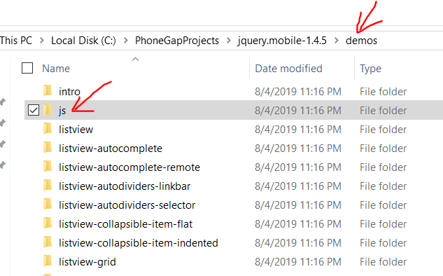
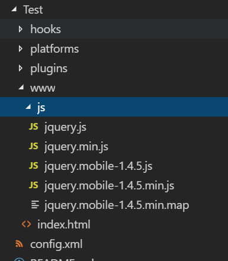
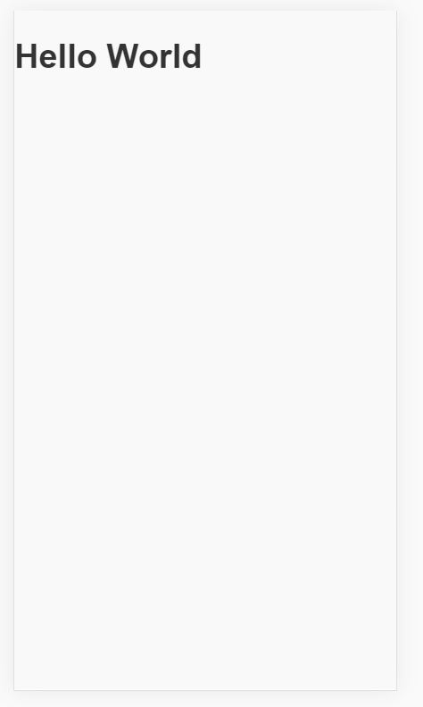

We will create the basic page structure. The basic structure of a jquery page consists of a container called page. Within the page container there are 3 sections. The header, content and footer. This is what it looks like:

And below is the body section of the index.html code:

Next we add 3 buttons in the content section:
And this is what the buttons look like:
